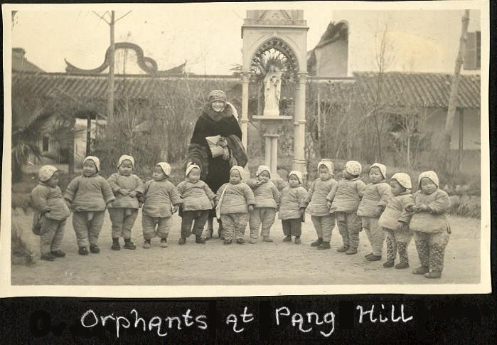

Wednesday, April the 8th, 2009
back to: title, date or indexes
From the far Antipodes, Glyn Webster writes:
Frank! What I am looking at here is Prudence Foxglove visiting the Pang Hill Orphanage. The little fellow in the middle is wearing his pippy bag. Please do not tell me I am wrong.
He is not.
